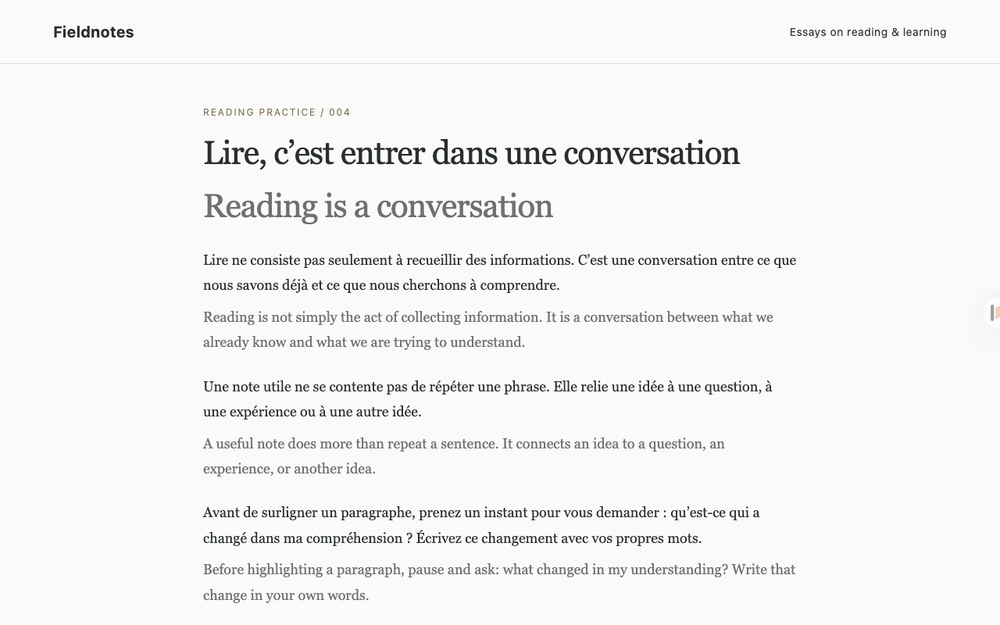
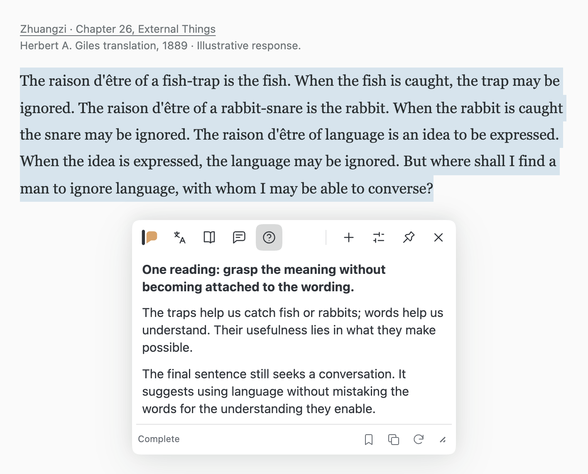
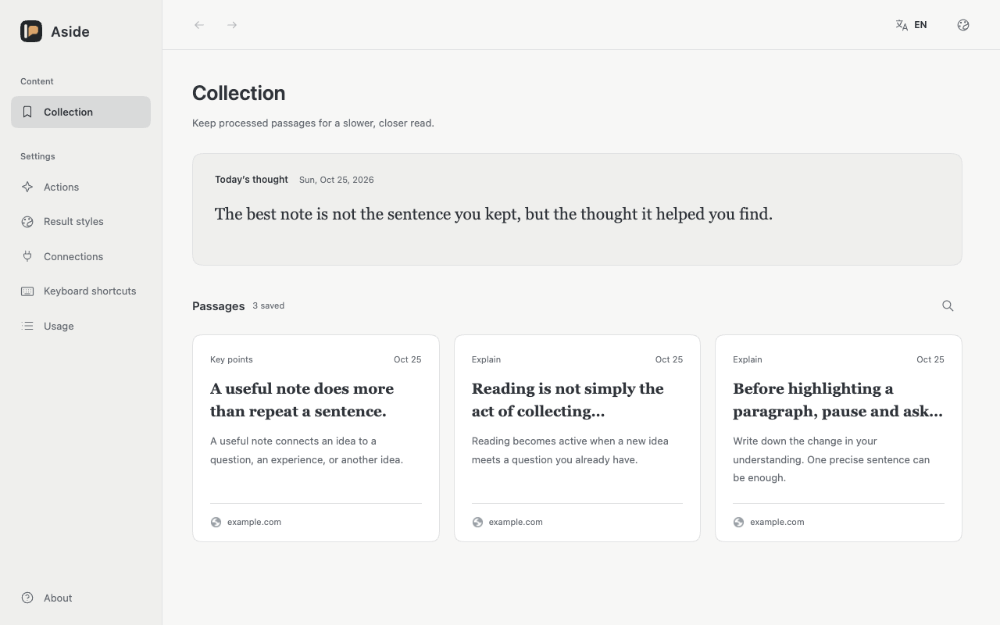
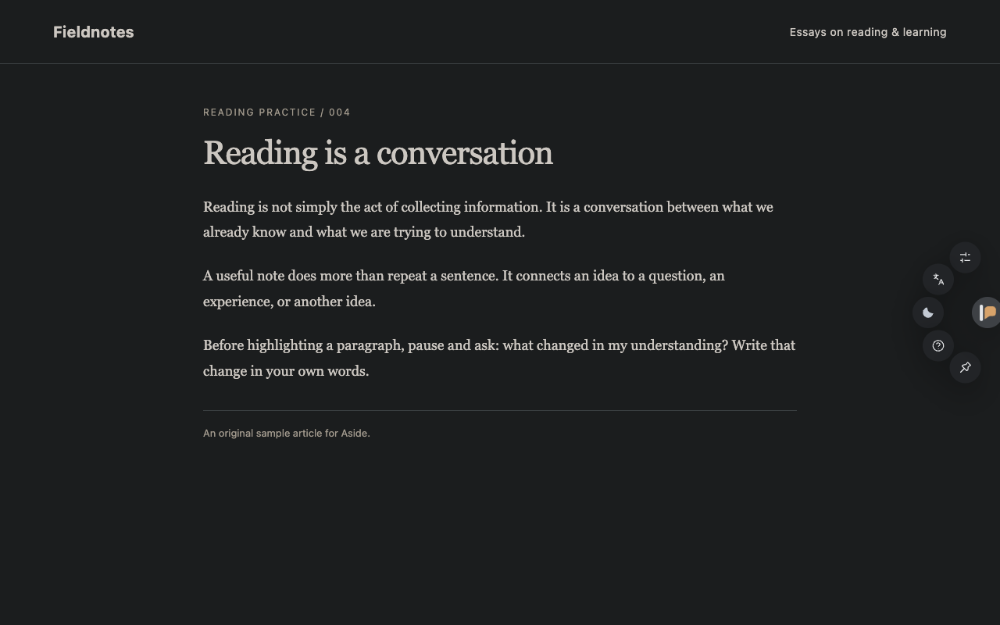

Yapay zekâ okuma yardımcısı · Açık kaynaklı tarayıcı uzantısı
Daha net anlayın. Daha derin düşünün.
Yapay zekâyla sayfaları çevirin, zor paragrafları anlayın, önemli noktaları çıkarın ve okuduklarınız hakkında sorular sorun. Çeviri özgün metnin yanında kalır; ayrı bir sohbet penceresine gidip gelmeniz gerekmez.
Masaüstü Chrome 120+ için. Sürüm 0.1.6
Masaüstü Edge 120+ için. Sürüm 0.1.6
Masaüstü Firefox 147+ için. Sürüm 0.1.6
Kayıt olmadan ücretsiz kullanın. Microsoft çevirisi kullanıma hazırdır; yapay zekâ model hizmetleri ücretli olabilir.

İki dil. Tek sayfa.
Özgün bağlamı kaybetmeden çeviriyi okuyun.
Bağlamı koruyun.
Çeviriler özgün paragrafların altında görünür; iki dil de gözünüzün önünde kalır.
Kaydırmaya devam edin.
Önce görünür alan çevrilir. Sayfayı kaydırdıkça veya içerik değiştikçe sonraki bölümler işlenir.
Özgün metne dönün.
Sayfayı istediğiniz an özgün hâline döndürün, metindeki yerinizi koruyun.


Sayfadan ayrılmadan sorun.
Bir bölümü seçerek yüzen panelde çeviri veya açıklama alın ya da seçili metin hakkında soru sorun.
Doğrudan soru sormak için yüzen menüden veya klavye kısayoluyla Hızlı Soru-Cevap’ı açın. Metin Çevirisi ile yazdığınız veya yapıştırdığınız metni çevirebilirsiniz.
Alt + Q Hızlı Soru-Cevap · Alt + T Metin Çevirisi
Metni ve bağlamını saklayın.
Yararlı sonuçları özgün metin ve kaynaklarıyla kaydedin. Koleksiyonunuzda arayın, yeniden okuyun ve düşüncenizi kaldığı yerden sürdürün.
Günün düşüncesi her gün kısa bir fikir sunar; isterseniz koleksiyonunuzdan ilham alabilir.


Işıklar sönse de devam edin.
Yerleşik Dark Reader motoru, az ışıkta okumak için siteleri karanlık moda uyarlar. Site bazında açın veya sistem ayarını izleyin.
Sonuçların rengini, yazı boyutunu ve satır aralığını okuma alışkanlıklarınıza göre ayarlayın.


Okuma biçiminize uygun bir araç.
Kendi işlemlerinizi oluşturun.
Kavramları açıklayın, eski metinleri yorumlayın ya da ana fikirleri çıkarın. Hazır işlemlere ek gereksinimler ekleyin veya kendi işleminizi oluşturup deneyin.
Dilinizi seçin.
15 arayüz dili arasından seçim yapın. Her işlem için çıktı dilini ayrı belirleyin.
Kaynaklara hızla dönün.
Alt + W ile penceredeki son iki sekme arasında geçiş yapın. macOS’ta Option kullanılır. Kısayolları Chrome / Edge’dan değiştirebilirsiniz.
Model seçimi sizin.
Hizmet adresi ve API anahtarıyla model hizmetinizi bağlayın. Aside şu arayüzleri destekler:
- OpenAI Responses
- OpenAI-compatible Chat Completions
- Anthropic Messages
- Gemini Interactions
localhost üzerinden çalışan uyumlu yerel model hizmetleri de desteklenir.
Doğrudan bağlantı.
İstekler doğrudan seçtiğiniz model hizmetine gönderilir. Aside aracı sunucu kullanmaz ve kullanım analizi toplamaz. Koleksiyonlar ve istek geçmişi tarayıcınızda saklanır.
Gizlilik politikasını oku (İngilizce)Ayarlarınız, her cihazda.
Model bağlantılarını, okuma işlemlerini ve düşünce oluşturma ayarlarını isteğe bağlı olarak tarayıcı hesabınız üzerinden eşitleyin. Ayarlar cihazdan çıkmadan önce parolanızla şifrelenir.
Her cihazda aynı parola.
Her cihazda aynı tarayıcıyı ve hesabı kullanın, tarayıcı eşitlemesini açın ve Aside’da aynı parolayla katılın. Chrome, Edge ve Firefox arasında ayarlar eşitlenmez. Model erişimini her cihazda ayrı ayrı onaylayın.
Her cihazda ayrı tutulur.
Koleksiyonlar, oluşturulan düşünceler, istek geçmişi ve önbellek eşitlenmez. Dil ve görünüm tercihleri de her cihazda ayrı ayarlanır.
Bilmek isteyebilecekleriniz.
Aside ücretsiz mi?
Aside, MIT lisansıyla ücretsiz ve açık kaynaklıdır. Yapay zekâ özellikleri için kendi model erişiminiz gerekir. Sağlayıcı istekleri ücretlendirebilir; model aboneliği veya API kredisi dahil değildir.
Hangi modelleri kullanabilirim?
Yukarıdaki dört arayüzden birini destekleyen bir hizmet seçin. Model bağlantılarında adresi ve API anahtarını girin, bağlantıyı test edin ve model seçin. Birden çok bağlantıyı kaydedip işlemlere ayrı ayrı atayabilirsiniz.
Yerel bir model kullanabilir miyim?
Evet; Ollama gibi uyumlu API sağlayan yerel bir hizmetle kullanabilirsiniz. OpenAI-compatible Chat Completions seçin ve localhost adresini girin. Hizmet ve model, kullandığınız istekleri desteklemelidir. HTTP hizmet adresleri de desteklenir. Mümkünse HTTPS kullanın; HTTP, API anahtarlarını ve istek içeriğini şifrelemez.
Okuma verilerim nereye gönderiliyor?
Microsoft çevirisi metni doğrudan Microsoft’a gönderir. Yapay zekâ özellikleri gerekli içeriği doğrudan seçtiğiniz model hizmetine gönderir. Sayfa çevirisi başlatıldıktan sonra kaydırma yeni bölümler gönderebilir. Model ayarlandıysa koleksiyonun o gün ilk açılışında günün düşüncesi oluşturulur ve isteğe bağlı olarak kayıtlı metinler kullanılır. Otomatik üretimi durdurmak için bu alanı gizleyin. Sağlayıcının veri politikası geçerlidir. Gizlilik politikasını oku (İngilizce)
Elle kurulum.
Tarayıcınızı seçin ve adımları izleyin.
-
İndirin ve çıkarın.
Uzantının ZIP dosyasını indirin ve kalıcı bir klasöre çıkarın. GitHub’daki “Source code” arşivi yerine uzantı paketini seçin.
-
Uzantıları açın.
Chrome adres çubuğuna
chrome://extensionsyazın. -
Uzantıyı yükleyin.
Geliştirici modu seçeneğini etkinleştirin, Paketlenmemiş öğe yükle seçeneğine tıklayın ve
manifest.jsoniçeren çıkarılmış klasörü seçin.
Kurulum klasörünü saklayın. Güncellemek için içeriğini değiştirin ve uzantıyı yeniden yükleyin. Elle kurulan uzantılar otomatik güncellenmez.
-
İndirin ve çıkarın.
Uzantının ZIP dosyasını indirin ve kalıcı bir klasöre çıkarın. GitHub’daki “Source code” arşivi yerine uzantı paketini seçin.
-
Uzantıları açın.
Edge adres çubuğuna
edge://extensionsyazın. -
Uzantıyı yükleyin.
Geliştirici modu seçeneğini etkinleştirin, Paketlenmemiş öğe yükle seçeneğine tıklayın ve
manifest.jsoniçeren çıkarılmış klasörü seçin.
Kurulum klasörünü saklayın. Güncellemek için içeriğini değiştirin ve uzantıyı yeniden yükleyin. Elle kurulan uzantılar otomatik güncellenmez.
-
İndirin ve çıkarın.
Uzantının ZIP dosyasını indirin ve kalıcı bir klasöre çıkarın. GitHub’daki “Source code” arşivi yerine uzantı paketini seçin.
-
Uzantıları açın.
Firefox adres çubuğuna
about:debugging#/runtime/this-firefoxyazın. -
Geçici olarak yükleyin.
“Geçici eklenti yükle” seçeneğine tıklayın ve çıkardığınız klasördeki
manifest.jsondosyasını seçin.
Yalnızca test içindir: Firefox yeniden başlatıldığında geçici eklentileri kaldırır. Kalıcı kurulum için Mozilla tarafından imzalanmış bir paket gerekir.
Microsoft çevirisi model kurulumu gerektirmez. Yapay zekâ özellikleri için Aside ayarlarında bir model bağlantısı ekleyin.